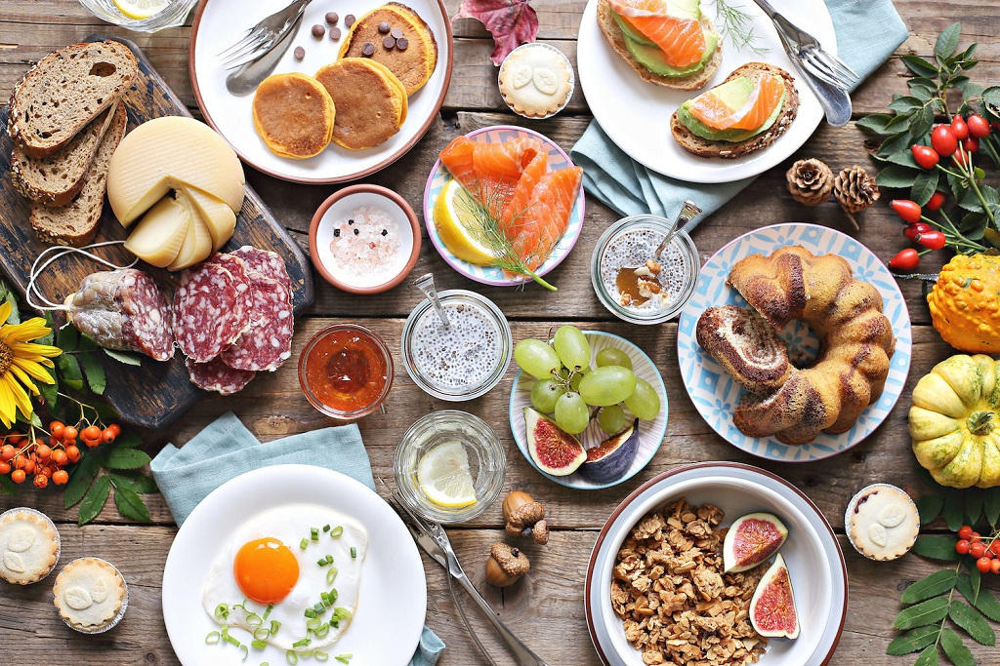
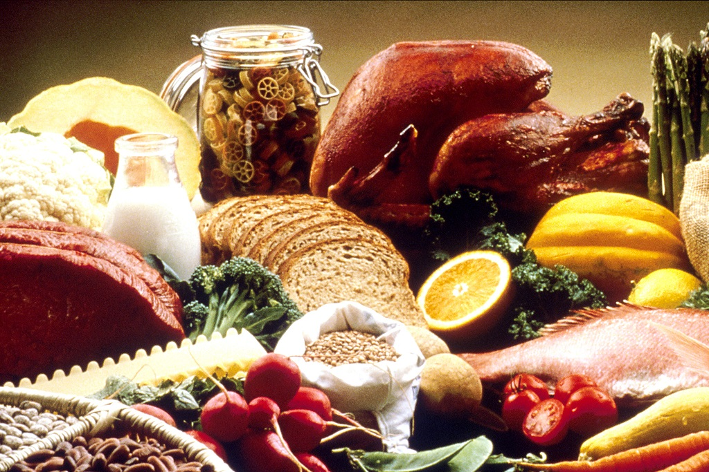

Crea tu menú aleatorio a partir de nuestra lista de platos o crea la tuya propia 100% editable.
Quiero mi menú!!”¿Qué comemos?“
Crea la lista de compras para tener todos los ingredientes de tu menú. nunca más compres de más ni de menos
”Solo tengo arvejas y una papa“
Elige qué días vas a comer carne. cuida tu salud y el medioambiente (y tu economia)
”Mayor consumo de carne es mayor riesgo de cancer de colon“
Para poder crear tus propios platos y editar los existentes, guardar tu historial de menús y más
”Un huevo hace mejor a cualquier plato.“
No solo una lista de ingredientes, te entregaremos un paso a paso para poder preparar exquisitos platos
Aprende a manipular correctamente los alimentos con estos consejos bromatologicos